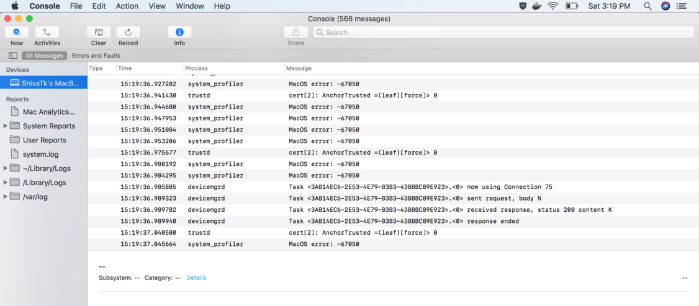
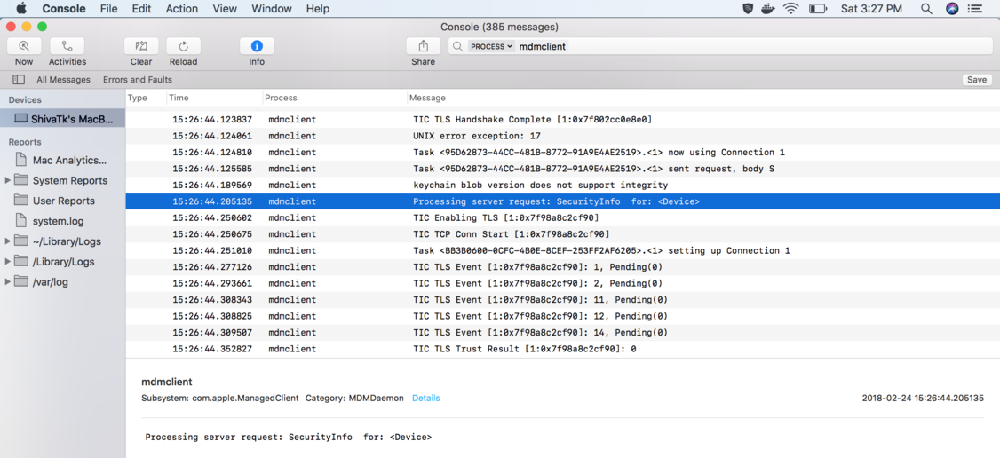

There are several log files to look at on a Mac depending on the type of issue we're dealing with. For basic activity such as mdmclient, device logs from Console.app is all we want.
Console.app
1. Launch console on the Mac by typing Console.app under spotlight search or from Applications > Utilities > Console.
2. Select your machine's name from the left pane and you should see logs in the main window.

3. To filter the logs by a process, simply type its name in the search bar.

Saving a log file
1. Replicate the issue on the device we want to grab logs for.
2. Launch Terminal and type -
sudo log collect --output ~/Desktop/DeviceLogs.logarchive
3. To grab logs only for the last 5 mins -
sudo log collect --output ~/Desktop/DeviceLogs.logarchive --last 5m
Note - This will create a logarchive file in your desktop that can later be viewed only in the Console.app on a Mac.
4. To save a log file in .txt or .log format, launch Console.app and select your machine name from the left pane.
5. Replicate the issue.
6. Select all content from the main window by a CMD + A, paste it a text editor of your choice and save for review.
Other useful log files -
system.log
For low level activity on the device such as launchd. File location - /var/log/system.log
install.log
For analyzing install processes i.e. the installer command, package installs etc. File location - /var/log/install.log
opendirectoryd.log
For analyzing user/network account logins etc..i.e. File location - /var/log/opendirectoryd.log
AirWatch Agent
To troubleshoot issues with the AirWatch Agent such as products, custom attributes, software update etc, you want to look at AirWatch specific logs under /Library/Application Support/AirWatch/Data/Logs
Here's a handy command to zip the contents -
sudo zip -r ~/Desktop/AWLogs.zip /Library/Application\ Support/AirWatch/Data/Logs/
Use the AWLogs.zip file in your desktop.